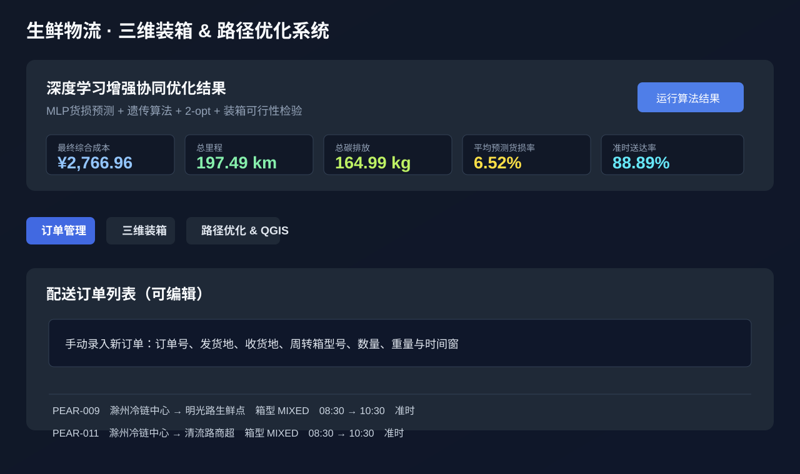
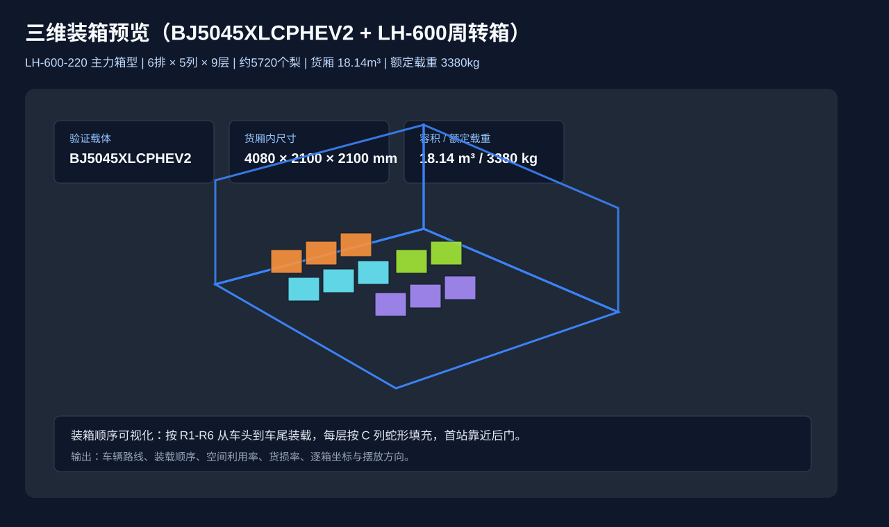
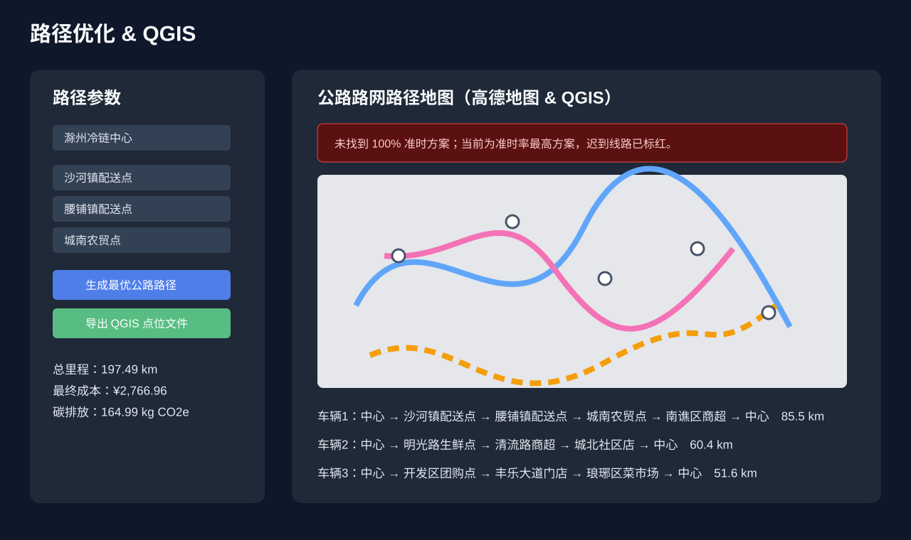

Fresh Cold Chain Logistics Demo
生鲜物流 · 三维装箱 & 路径优化系统
面向生鲜梨冷链配送的开源演示项目，集成订单录入、三维装箱、路径优化、货损预测、碳排放核算与 QGIS 导出。 单页演示无需安装后端环境，打开浏览器即可上手体验。



1. 打开演示
点击“进入网页演示”，进入单文件网页版本。不需要 Python、Node.js、数据库或 Docker。
2. 运行算法
在订单管理中查看示例订单，点击运行按钮，观察综合成本、总里程、碳排放与准时率。
3. 切换工作台
进入“三维装箱”和“路径优化 & QGIS”，查看箱体摆放、车辆分配和公路配送路线。
地图服务需要填写自己的高德地图 Key。不开启地图 Key 时，仍可体验订单、装箱、指标展示等核心流程。
完整前后端平台请参考
docs/GETTING_STARTED.md。